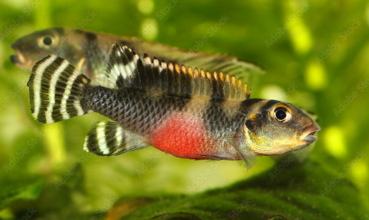

Systématique
- Ordre : Cichliformes
- Famille : Cichlidae
- Genre : Nanochromis
- Espèce : N. transvertitus
- Auteur : Stewart & Roberts, 1984

Nanochromis transvertitus est un petit cichlidé fluviatile nain originaire du bassin du Congo. Il est particulièrement apprécié pour son patron de coloration unique, composé de barres verticales sombres (environ 5 à 7) sur un corps gris argenté. Son nom d'espèce, transvertitus, fait référence au fait que, contrairement à la majorité des cichlidés, c'est la femelle qui arbore les couleurs les plus vives et les motifs les plus contrastés, notamment dans les nageoires dorsale et caudale.
Il mesure entre 3,5 et 5 cm de longueur standard, les mâles étant légèrement plus grands que les femelles. Le corps est allongé et comprimé latéralement. La nageoire dorsale est longue et basse. Chez la femelle, les nageoires caudale et dorsale présentent des rayures noires et blanches alternées très nettes, tandis que le mâle est plus terne avec des nageoires souvent transparentes ou légèrement bleutées.
Nanochromis transvertitus est un poisson territorial mais relativement paisible en dehors des périodes de frai. Il vit en couple formé et occupe la zone inférieure de l'aquarium. C'est un creuseur modéré qui apprécie les cachettes sombres et les zones abritées par la végétation.
En aquarium, il nécessite un environnement riche en grottes (pots en terre cuite, noix de coco, amas rocheux). Bien qu'il puisse être maintenu en bac communautaire avec d'autres espèces calmes occupant les zones supérieures, il se montre très agressif envers ses congénères et les autres cichlidés nains si l'espace est restreint. Il est sensible au stress et à la qualité de l'eau, exigeant des paramètres très stables.
Mode : Ovipare, pondeur sur substrat caché (cavitole).
C'est la femelle qui initie généralement la parade nuptiale en exhibant son abdomen coloré et en vibrant devant le mâle. Le couple choisit une cavité pour y déposer les œufs (entre 40 et 80). La femelle assure l'entretien direct de la ponte (ventilation) tandis que le mâle défend le territoire aux abords de la grotte.
L'éclosion a lieu après environ 3 jours et la nage libre commence environ 5 à 6 jours plus tard. Les parents surveillent étroitement le nuage d'alevins. La reproduction réussie nécessite impérativement une eau très douce et acide (pH proche de 5.0 - 6.0). Les jeunes sont sensibles aux changements d'eau brusques et doivent être nourris avec des nauplies d'artémias dès la nage libre.
Dimorphisme sexuel : Très marqué mais inversé par rapport aux standards habituels. La femelle est plus petite mais plus colorée, avec des rayures noires verticales très contrastées dans les nageoires dorsale et caudale. Le mâle est plus grand, plus svelte, avec des nageoires plus longues mais dépourvues de motifs contrastés.
Espérance de vie : Environ 3 à 5 ans en aquarium.
L'espèce est endémique du lac Mai-Ndombe (anciennement lac Léopold II) et de ses affluents, dans le système du fleuve Congo en République Démocratique du Congo. Elle fréquente les eaux noires, très douces, acides et chargées en tanins.
L'habitat naturel est composé de zones sablonneuses ou boueuses jonchées de feuilles mortes, de branches et de racines, offrant de nombreuses cavités naturelles. La visibilité y est souvent réduite et le courant est faible à nul dans les zones de prédilection de l'espèce.
Répartition

Origine naturelle :
- République Démocratique du Congo : Lac Mai-Ndombe et bassin environnant.
- Localité type : Lac Mai-Ndombe.
Distribution restreinte. L'espèce est régulièrement importée mais reste plus rare que d'autres Nanochromis en raison de la difficulté d'accès à sa zone de collecte.
Paramètres de maintenance
Température : 24 à 27 °C.
pH : 5,0 à 6,5 (très sensible aux pH alcalins).
GH : 1 à 8 °dGH (eau extrêmement douce indispensable).
Courant : Faible.
Volume conseillé : Minimum 60-80 L pour un couple seul.
Régime alimentaire
Régime : Omnivore à tendance carnivore.
Dans la nature, il se nourrit de petits invertébrés aquatiques, de larves d'insectes et de crustacés.
En aquarium, il peut être difficile à nourrir initialement avec des paillettes. Il préfère nettement les nourritures congelées ou vivantes (artémias, daphnies, vers de vase blancs). Une alimentation variée est essentielle pour maintenir ses couleurs et stimuler la reproduction.